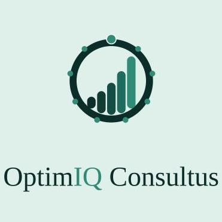

Client design review
Portal screen review
Review the screens in the order each audience will use them.
Review each audience journey below. The enterprise phase plan groups the later screen concepts into proposed delivery increments and identifies decisions needed before detailed design.
Consultant journey
Role selection starts on the existing CTA form; portal steps follow sign-in.
1Consultant CTA registration · Open form ↗Existing public form. Choose Consultant, Strategic Advisor, and/or Project Manager during registration.Phase 1
2Portal sign-inSign in with the email and password created during public registration.Phase 1
3Terms, code of conduct & declarationsReview the five declarations before starting your Consultant CTQ form.Phase 1
4Consultant CTQ formComplete all eight sections and 36 client-provided questions. Scores and weightings stay hidden.Phase 1
5Role-fit results & role selectionAfter CTQ review, see fit categories and choose the roles you want to pursue.Phase 1
6Profile & composite assessment progressUpdate your profile and follow the remaining composite assessment areas.Phase 2
7Consultant dashboardOpen from the profile menu. See selected roles, assessment progress, concurrent project assignments, and feedback.Phase 2
8Opportunities & project detailsReview masked opportunities and express interest or submit a response.Phase 2
9Project agreement gateRequired agreements are signed before award and introduction.Phase 2
10EngagementsView active and completed OptimIQ project assignments separately from past experience.Phase 2
11Payments & invoicesView project-linked payment and invoice status. Financial flow details need clarification.Phase 2
12Communications & notificationsReview portal messages, email notifications, and communication features.Phase 2
13Project calendarFollow milestones, meetings, and due dates across engagements.Phase 2
14Performance & Continuing Professional DevelopmentReview project feedback separately and manage development records.Phase 2
15Project documents & knowledge libraryProject folders, knowledge resources and success stories need later design approval.Phase 2
The first five screens form Phase 1 through CTQ role-fit selection. Dashboard, assessment and the project journey are Phase 2.
Consulting firm journey
One firm account, from registration and qualification through Seller, Buyer, and Win-and-Staff processes.
1Consulting Firm CTA registration · Open form ↗Existing public registration form. Email verification and password setup happen here.Phase 1
2Shared portal sign-inSingle sign-in routes the firm account into its workspace.Phase 1
3Terms & declarationsReview and accept terms after sign-in when they were not captured during registration.Phase 1
4Firm profile & CTQ · six stepsComplete the six-section, 23-question firm profile. Answers and field priorities follow the client specification.Phase 1
5Firm dashboard · 360° workspacePost-CTQ overview with firm processes available from the left navigation.Phase 2
6Qualification & empanelmentCompliance verification, evidence and references, panel decision, MOU, and listing.Phase 2
7Corporate membershipReview firm membership and Seller-mode eligibility.Phase 2
8Seller opportunitiesView opportunities and request relationship-manager bid support.Phase 2
9Relationship-manager bid supportRequest OptimIQ relationship-manager support for an eligible Seller opportunity.Phase 2
10Technical & commercial bidsPrepare technical and commercial responses, negotiation, and any approved auction.Phase 2
11Buyer Expert requestsPost a talent requirement for an OptimIQ-sourced Expert.Phase 2
12Expert shortlist & selectionReview a shortlist, interview Experts, select, and issue an LOI.Phase 2
13Won projects to staffLink a bid team, reserve Experts with consent, then convert after award or release.Phase 2
14Agreements & awardTrack signature gates before award and introduction.Phase 2
15Engagements & deliveryFollow mobilisation, milestones, delivery status, acceptance, and close-out.Phase 2
16Payments & invoicesReview invoices and payment status while keeping OptimIQ internal margins private.Phase 2
17Communications & notificationsPotential firm messages, project updates, and notification inbox.Phase 2
18Project calendarPotential view of meetings, milestones, and due dates.Phase 2
19Project documentsPotential project files and controlled sharing; future knowledge library requires approval.Phase 2
20Performance & relationship reviewReview firm relationship and project delivery feedback; keep Seller performance separate from Buyer payment behaviour.Phase 2
21Renewal & membership statusReview tier changes, renewal, pause, and reinstatement states.Phase 2
22Grievances & change requestsSubmit and track member support requests listed in the BRD.Phase 2
23Firm exit & final settlementReview account-exit steps, open-project handling, and final settlement.Phase 2
Phase 1 ends with CTQ submission. The dashboard and remaining firm journey are Phase 2.
Client journey
From the existing client enquiry through account setup, requirements, matching, delivery, and follow-up.
1Client CTA registration · Open form ↗Existing public form. Its answers are carried into the client account.Phase 1
2Portal sign-inSign in with the account created during public registration.Phase 1
3Terms & declarationsReview and accept the client account terms before CTQ.Phase 1
4Client CTQ form · optionalOne section with budget, preferred start and decision role. Every question can be skipped.Phase 1
5Client dashboardPost-CTQ account and project overview for the later journey.Phase 2
6Organisation profileReview organisation details and profile management.Phase 2
7Requirement creation & scopingCreate a requirement from client login; OptimIQ scopes and routes it.Phase 2
8Track A masked shortlistReview 2–3 curated profiles and request more when needed.Phase 2
9Masked seller profile detailInspect approved capability and experience while identity remains protected.Phase 2
10Request additional profilesAsk OptimIQ for more profiles when the normal shortlist is unsuitable.Phase 2
11Track B tender & evaluationFollow TER, FER, evaluation decision, and tender outcome.Phase 2
12Agreements & awardRequired signatures before award and introduction.Phase 2
13Meetings & controlled introductionCoordinate meetings and identity reveal at the approved stage.Phase 2
14Engagements & milestonesFollow mobilisation, delivery, acceptance, and change requests.Phase 2
15Invoices & paymentsReview client billing and payment states.Phase 2
16Feedback & re-engagementProvide per-engagement feedback and continue the client relationship.Phase 2
17Communications & notificationsClient messages, project updates, and notifications.Phase 2
18Project calendarReview meetings, milestones, and deadlines.Phase 2
19Project documentsProject folders and access; future knowledge library remains unapproved.Phase 2
20Support, complaints & account exitRaise a concern and review account support and exit paths.Phase 2
Phase 1 covers sign-in, terms and the optional Client CTQ. The existing CTA precedes portal sign-in. Dashboard and all later screens are Phase 2. The Client workbook places its optional questions immediately after CTA; this portal placement is open for client confirmation.
OptimIQ staff journey
Staff access is provisioned by a Master Admin or Super Admin.